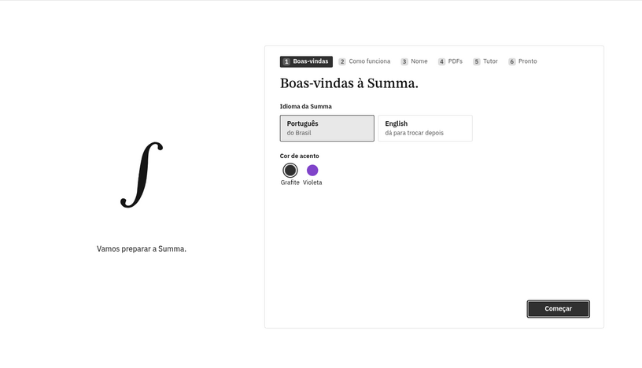
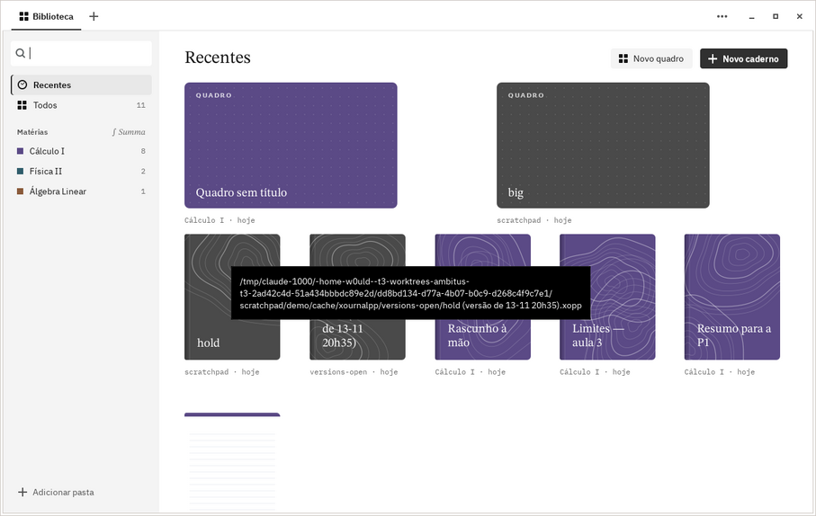
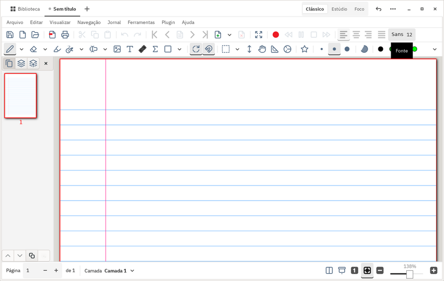
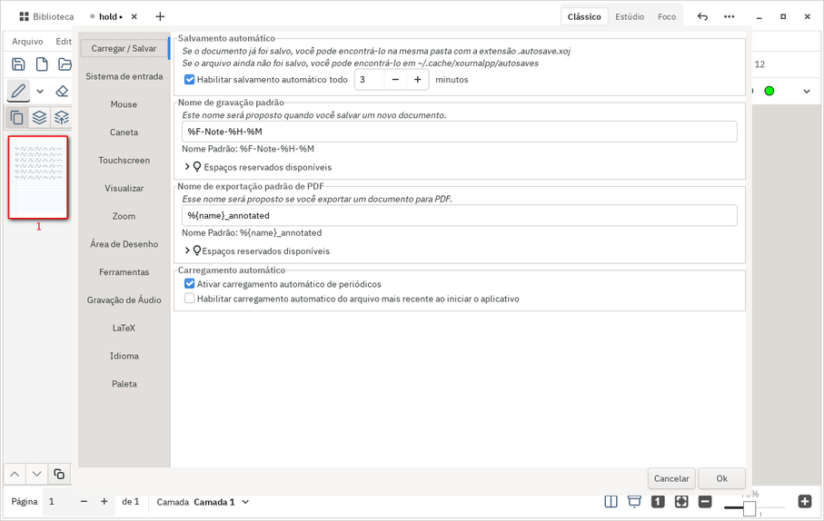
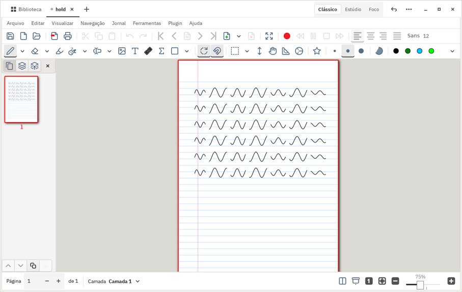

Telas e detalhes
Protótipo r5. Fecha o que faltava decidir antes de implementar: o setup, a tela de início, o caderno novo, as Preferências, as opções de cada ferramenta, as canetas favoritas, a barra de seleção, o modo Clássico, os textos e dois detalhes do r4. Os tokens e os ícones Lucide são os do Summa, e o setup segue o desenho do setup do Summa. Tudo é clicável.
- Setup de primeira vez
- Tela de início
- Caderno novo
- Preferências
- Tocar de novo: opções da ferramenta
- Canetas favoritas
- Barra de seleção
- Modo Clássico
- Textos que dizem Xournal++
- Detalhes do r4
1. Setup de primeira vez
Hoje o Ambitus não tem setup: abre direto na biblioteca, com as configurações do Xournal++. A proposta é a mesma forma do setup do Summa: o símbolo grande à esquerda, um cartão à direita com as etapas numeradas e o título em STIX. São seis etapas, e quase tudo já vem escolhido, então dá para passar com “Próximo” sem ler.

Use Próximo e Voltar. Na etapa 3, escreva no quadro com o mouse.
2. Tela de início
A biblioteca de hoje já está perto do certo. Faltam três coisas:
- “Continuar” no topo, com a miniatura da página onde você parou: um clique e você volta para o mesmo caderno, na mesma página.
- A capa segue a cor da matéria, a cor do quadradinho na lateral. Hoje toda capa é violeta ou cinza.
- O caminho do arquivo vai para uma linha discreta no pé ao passar o mouse. Sai o balão preto enorme da captura.

Recentes
Primeira vez, sem cadernos
Seus cadernos aparecem aqui.
Se o Summa tiver um cofre, a pasta dele já vem ligada pelo setup e este estado quase nunca aparece.
3. Caderno novo
Hoje, “Novo caderno” abre um “Sem título” no modo Clássico, com pauta azul, margem rosa e zoom de 138%. A proposta é um diálogo pequeno com nome, matéria e papel. O caderno abre no Estúdio, já salvo na pasta da matéria, e por isso a primeira versão já fica guardada.

O papel Summa é o pautado com as linhas em cinza claro e a margem em violeta suave, e vira o padrão. O pautado azul do Xournal++ continua na lista. “Infinito” é o quadro que já existe. Para o .xopp nada muda: são só as cores do fundo da página, e o Xournal++ abre igual.
4. Preferências
Hoje são as Preferências do Xournal++: diálogo cinza, abas centralizadas, caixas de seleção e textos como “%F-Note-%H-%M”. A proposta é a tela de Configurações do Summa: navegação à esquerda com busca, linhas com interruptor, em tela cheia. Ficam só as escolhas que importam no dia a dia. Nada some: a última seção, “Avançado”, abre as Preferências completas do Xournal++.

5. Tocar de novo na ferramenta: as opções
Com a ferramenta já escolhida, um segundo toque no botão dela abre as opções, logo abaixo da paleta. O primeiro toque continua só escolhendo. É assim que as opções do Xournal++ espalhadas em menus (forma da ponta, tracejado, tipo de borracha, tipo de seleção) ficam a um toque de distância sem ocupar a paleta.
6. Canetas favoritas
Recomendo sim, mas pequeno. Uma favorita guarda ferramenta, cor e espessura juntas: “caneta violeta fina”, “marca-texto amarelo”. Ela nasce no botão Guardar como favorita das opções acima e aparece no começo da paleta, como um ponto com o ícone dentro. Cabem até quatro. Botão direito numa favorita tira ela. Sem favoritas, a paleta fica exatamente como no r4.
Escolher uma favorita troca ferramenta, cor e espessura de uma vez. A tecla 1–4 chama cada uma; hoje esses números trocam a cor, e passariam a valer para as favoritas quando existirem.
7. Barra de seleção
Ao selecionar com o laço, aparece uma barra flutuante logo acima da seleção, com o que se faz com ela. Hoje essas ações estão espalhadas no menu Editar e no botão direito.
“Converter em texto” só aparece quando a seleção tem escrita à mão. A cor muda a tinta do que está selecionado. ⋯ guarda o resto: Mandar ao Summa, Copiar como imagem, Duplicar, Trazer para frente e Mandar para trás. A barra some enquanto você arrasta a seleção e volta quando você solta.
8. Modo Clássico
O Clássico existe para quem quer a barra completa. Hoje ele tem duas fileiras de ícones Lucide antigos pintados de cinza-azulado, gravação de áudio em vermelho, cores saturadas (verde-limão, ciano), borda vermelha na página atual e número de página em vermelho. A proposta mantém todas as funções, mas:
- uma fileira só por padrão: arquivo, histórico, as mesmas ferramentas e cores do Estúdio, e zoom. A segunda fileira (navegação, áudio, alinhamento de texto) volta pelo “Personalizar barra” do Xournal++, que continua lá;
- os ícones Lucide atuais em cinza neutro, os mesmos do Estúdio e do Summa;
- a página atual marcada pelo anel do acento na miniatura, sem borda vermelha;
- o fundo atrás das páginas no cinza do Summa.

9. Textos que ainda dizem “Xournal++”
São 42 textos na tradução. A regra proposta: onde o texto fala do programa, diz Ambitus. Onde fala do formato ou da origem, mantém Xournal++, porque é verdade e importa para a compatibilidade. O Sobre credita o Xournal++ e a licença GPL.
| Hoje | Proposta |
|---|---|
| Xournal++ travou da última vez. Gostaria de restaurar o último arquivo editado? | O Ambitus fechou sem querer da última vez. Quer abrir o caderno como estava? [Abrir como estava] [Agora não] |
| Ops... Xournal++ encontrou um erro fatal | O Ambitus encontrou um erro e precisa fechar. O caderno aberto foi guardado. |
| Desculpe, o Xournal++ só consegue abrir um arquivo por vez. | Abra um caderno por vez; os outros abrem em abas. |
| Preferências Xournal++ | Configurações (e “Preferências completas do Xournal++” no Avançado) |
| Sobre Xournal++ | Sobre o Ambitus — “baseado no Xournal++ (GPL-2.0)”, com link e créditos |
| As alterações de plugin só são aplicadas após Xournal++ ser reiniciado | As mudanças nos plugins valem depois de reabrir o Ambitus. |
| Arquivos Xournal++ | Cadernos (.xopp, o formato do Xournal++) — mantém o nome do formato |
| …versão de formato mais recente que a suportada por esta versão do Xournal++… | …mais recente do que este Ambitus conhece… (e o resto igual) |
Junto vem a revisão do tom: frases curtas, em segunda pessoa e sem “Desculpe”, como as do Summa. O .desktop e o tipo de arquivo também dizem “Caderno do Ambitus”.
10. Detalhes do r4
Em dois lugares que mexem na mesma coisa: no ⋯ da paleta, na hora, e em Configurações → Ferramentas, para quem procura nas configurações (está no protótipo da seção 4). Não existe terceiro lugar.
página 2 · abrir no Ambitus
O cartão fica na mensagem como as imagens anexadas. Um clique abre o caderno no Ambitus, na mesma página. Se a página mudou depois, ele abre do mesmo jeito: o cartão aponta para o caderno, não guarda uma cópia.
Ordem de implementação, depois do seu ok
- Ícones, cores e fundo neutro (r3), mais o papel Summa.
- Paleta com ⋯, opções ao tocar de novo e favoritas (r4, seções 5 e 6).
- Barra de seleção e menu radial personalizável.
- Caderno novo, tela de início e textos.
- Configurações no estilo do Summa e setup de primeira vez.
- Modo Clássico enxuto.
- No Summa: página como anexo, clipe no chat lateral e chat solto igual ao preso.